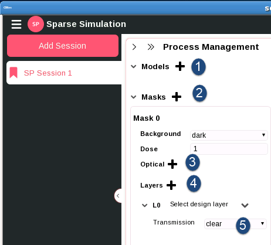
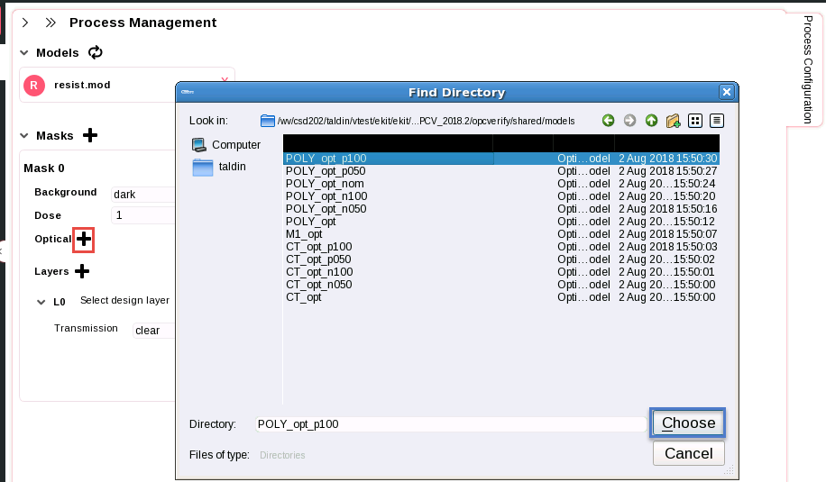
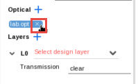
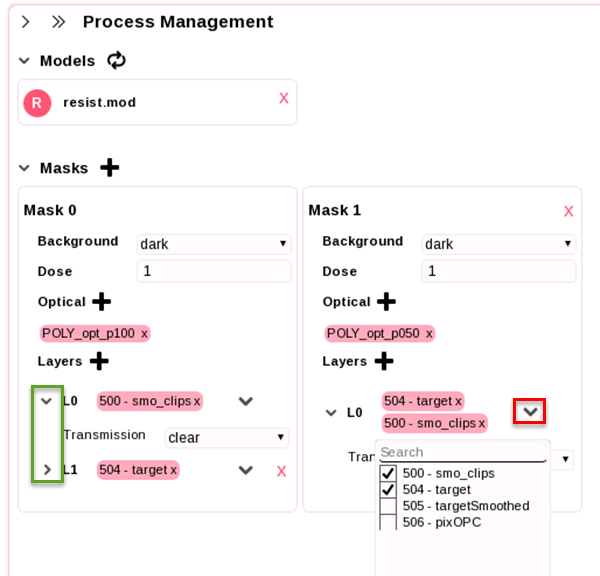

Sparse sessions require you to manually
load resist and optical models and map the mask layers to define
processes, because they lack a litho model directory.
Note: Sparse Process Management starts with the
Process Configuration panel open. This differs from the Litho Model
Process Management task, where the process models are already set.
Procedure
- Add the
resist model. Click on the + button next
to Models. Use the file navigator to select
a previously-generated Calibre WORKbench resist model.
Note: Only one resist model is permitted
in a sparse session. To change the model, click the recycle arrow.
Figure 1. Sparse
Process Configuration
- Define
the mask background and dose. By default, Sparse sessions must contain
at least one mask (shown as Mask 0). You can optionally click the + button
next to Masks to add mask cards.
All mask cards have Background and Dose fields.
- To
change the default Background, click the
adjacent field and select between:
dark —
For use with negative tone masks
clear —
For use with positive tone masks
atten —
An additional field for attenuation factor is
available with this choice
complex —
Additional fields for real and imaginary are
available with this choice
The default Background is dark.
- To change
the default Dose value, click the adjacent
edit field and type the dose as a real number. The default Dose value
is 1.
Note: You can click the red X in
the top right corner of an added mask card to delete it. Mask 0
cannot be deleted.
- Click the + next
to Optical to add one or more optical models.

A dialog box opens enabling you to navigate to your optical model
directory. Select the file and click Choose.
Note: You can click the X on
an optical model to remove it.

- Map design
layers. By default, Sparse sessions must contain at least one defined
design layer mapping (L0).
Note: You can click the + button
next to Layers to add more design layers.
- Click
the down arrow icon to the right of a layer to expand the available
design layer list, and select one or more layers to map.

Tip There is also a search feature to identify
layers of interest. Start typing a layer name to reduce the available
choices.
- (Optional)
Use the arrows to the left of the layer name to expand and collapse
the layer mapping details.
- Click the
field adjacent to Transmission to choose
layer transmission values. Available options are:
dark —
For use with negative tone masks
clear —
For use with positive tone masks
atten —
An additional field for attenuation factor is
available with this choice
complex —
Additional fields for real and imaginary are
available with this choice
The default Transmission value is clear.
Results
When you have completed Sparse Process Management Configuration,
collapse the pane using the right arrow in the upper left corner.
Proceed to “Adding Process Window Conditions”.